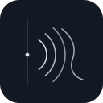
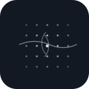
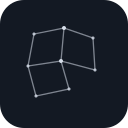
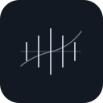
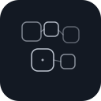
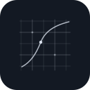

Optical
Broken rings
optical-broken-rings
First-pass procedural SVG glyphs for Jannes Gladrow's website. These are intentionally monochrome, sparse, and slightly enigmatic, with three families: optical, dynamics, and geometric. The goal is not final decoration yet, just finding a visual language that feels scientific without going full startup or sci-fi kitsch.





